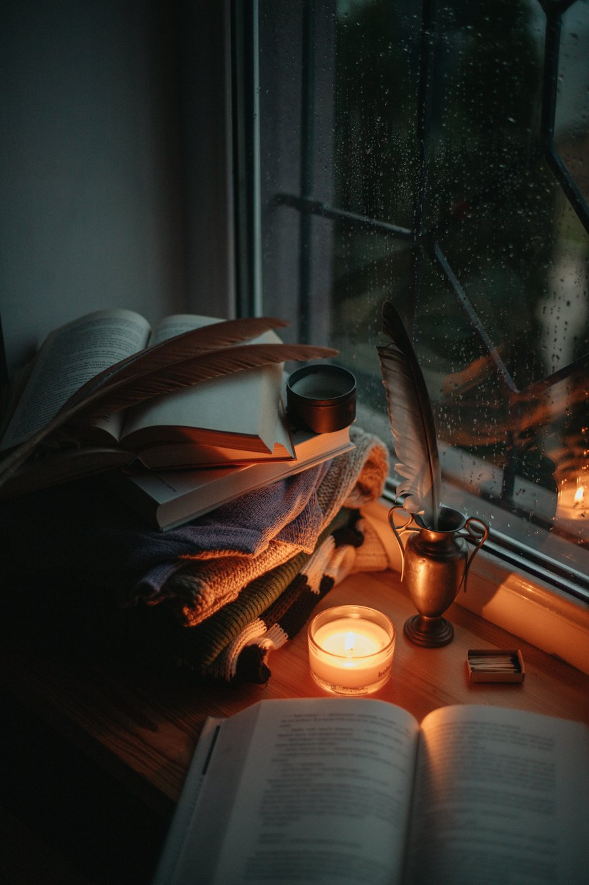

Sur la place de la République, une librairie générale où l'on vient flâner, demander un conseil ou commander le titre qui manque.
Un fonds généraliste pour tous les âges, et les nouveautés de chaque saison mises en avant sur les tables.
L'équipe accueille, conseille et oriente chaque lecteur, que vous cherchiez un cadeau, un auteur précis ou simplement votre prochaine lecture.
La librairie organise aussi des rencontres et des animations tout au long de l'année : le programme est publié sur Facebook et Instagram.

Ouvert du lundi au samedi
| Lundi | 9h30 - 19h |
| Mardi | 9h30 - 19h |
| Mercredi | 9h30 - 19h |
| Jeudi | 9h30 - 19h |
| Vendredi | 9h30 - 19h |
| Samedi | 9h30 - 19h |
| Dimanche | Fermé |
En continu, sans fermeture le midi.